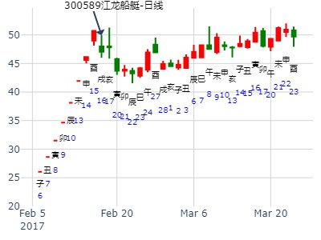
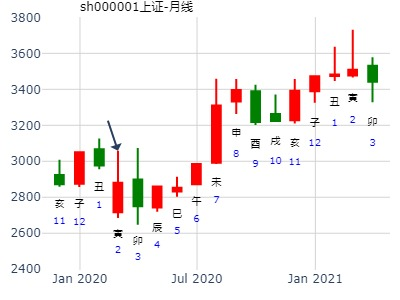

出生：没填 年 性别：男 占事：华泽钴镍(000693) 年前大涨吗
排卦：元亨利贞网六爻在线排盘系统 http://www.china95.net
公历起卦时间：2014年1月15日12时28分 (电脑自动)
干支：癸巳年 乙丑月 丙戌日 甲午时 （日空：午未）
坤宫：水天需 (游魂) 坤宫：水天需 (游魂)
六神 伏神 本 卦 变 卦
青龙 妻财戊子水 ▅▅ ▅▅ 妻财戊子水 ▅▅ ▅▅
玄武 兄弟戊戌土 ▅▅▅▅▅ 兄弟戊戌土 ▅▅▅▅▅
白虎 子孙戊申金 ▅▅ ▅▅ 世 子孙戊申金 ▅▅ ▅▅ 世
腾蛇 兄弟甲辰土 ▅▅▅▅▅ 兄弟甲辰土 ▅▅▅▅▅
勾陈 父母乙巳火 官鬼甲寅木 ▅▅▅▅▅ 官鬼甲寅木 ▅▅▅▅▅
朱雀 妻财甲子水 ▅▅▅▅▅ 应 妻财甲子水 ▅▅▅▅▅ 应
占事：1月大盘涨跌横如何？ 阿晖
起卦方式：手动摇卦
公历时间：2015年1月5日14时23分
干 支：甲午年 丙子月 辛巳日 乙未时
旬 空：辰巳 申酉 (申酉) 辰巳
坤宫：水天需（游魂）
六神 伏 神 【本 卦】
螣蛇 ▄▄ ▄▄ 妻财戊子水
勾陈 ▄▄▄▄▄ 兄弟戊戌土
朱雀 ▄▄ ▄▄ 子孙戊申金 世
青龙 ▄▄▄▄▄ 兄弟甲辰土
玄武 父母乙巳火 ▄▄▄▄▄ 官鬼甲寅木
白虎 ▄▄▄▄▄ 妻财甲子水 应
本月下影线。基本在1月5日收盘价下方运行。
主帖标题: 年卦-----2021年大盘涨跌
公历时间：2021年1月1日9时40分 农历时间：庚子年 十一月十八日巳时
干 支：庚子年 戊子月 己酉日 己巳时
旬 空：辰巳 午未 寅卯 戌亥
神 煞：驿马─亥 桃花─午 日禄─午 贵人─子，申
坤宫：水天需（游魂）
六神 伏 神 【本 卦】
勾陈 ▄▄ ▄▄ 妻财戊子水
朱雀 ▄▄▄▄▄ 兄弟戊戌土
青龙 ▄▄ ▄▄ 子孙戊申金 世
玄武 ▄▄▄▄▄ 兄弟甲辰土
白虎 父母乙巳火 ▄▄▄▄▄ 官鬼甲寅木
螣蛇 ▄▄▄▄▄ 妻财甲子水 应
主帖标题: 中字头寅月指数大幅度上涨的领头板块
求测事情：600737,后市如何
公历：2021-01-14 12:25 甲寅旬 子丑空
庚子年己丑月壬戌日丙午时
神煞：驿马-申 桃花-卯 日禄-亥 贵人-卯,巳
多空势均力敌
水天需(坤宫 ) 乾(乾宫 )
▄▄ ▄▄戊子水妻财 白虎 ×─→世▄▄▄▄▄壬戌土兄弟
▄▄▄▄▄戊戌土兄弟 滕蛇 ▄▄▄▄▄壬申金子孙
世▄▄ ▄▄戊申金子孙 勾陈 ×─→ ▄▄▄▄▄壬午火父母
▄▄▄▄▄甲辰土兄弟 朱雀 应▄▄▄▄▄甲辰土兄弟
▄▄▄▄▄甲寅木官鬼 青龙 ▄▄▄▄▄甲寅木官鬼
应▄▄▄▄▄甲子水妻财 玄武 ▄▄▄▄▄甲子水妻财
江龙船艇(300589)近期走势： 水天需静卦。yyzxh888
公历起卦时间：2017年2月16日23时37分 (在线摇卦)
干支：丁酉年 壬寅月 乙亥日 丙子时 （日空：申酉）
坤宫：水天需 (游魂)
六神 伏神 本 卦
玄武 妻财戊子水 ▅▅ ▅▅
白虎 兄弟戊戌土 ▅▅▅▅▅
腾蛇 子孙戊申金 ▅▅ ▅▅ 世
勾陈 兄弟甲辰土 ▅▅▅▅▅
朱雀 父母乙巳火 官鬼甲寅木 ▅▅▅▅▅
青龙 妻财甲子水 ▅▅▅▅▅ 应
险在前，摇完卦就是顶。后长时间反弹到这个位置又跌。

主帖标题: 六爻试测上证庚子年寅月至辰月哪月是顶？
试测上证庚子年寅月至辰月月顶ztz？
出生：2020 年 性别：男 占事：没填
公历起卦时间：2020年2月10日15时56分 (电脑自动)
干支：庚子年 戊寅月 癸未日 庚申时 （日空：申酉）
神煞：驿马－巳 桃花－子 日禄－子 贵人－卯，巳
坤宫：水天需 (游魂)
六神 伏神 本 卦
白虎 妻财戊子水 ▅▅ ▅▅
腾蛇 兄弟戊戌土 ▅▅▅▅▅
勾陈 子孙戊申金 ▅▅ ▅▅ 世
朱雀 兄弟甲辰土 ▅▅▅▅▅
青龙 父母乙巳火 官鬼甲寅木 ▅▅▅▅▅
玄武 妻财甲子水 ▅▅▅▅▅ 应

主帖标题: 大家一起来：试测股票何时涨停？
大家一起来：试测深证大东海A何时涨停？
公历起卦时间：2020年2月20日14时18分 (电脑自动)
干支：庚子年 戊寅月 癸巳日 己未时 （日空：午未）
神煞：驿马－亥 桃花－午 日禄－子 贵人－卯，巳
坤宫：水天需 (游魂) 坤宫：水天需 (游魂)
六神 伏神 本 卦 变 卦
白虎 妻财戊子水 ▅▅ ▅▅ 妻财戊子水 ▅▅ ▅▅
螣蛇 兄弟戊戌土 ▅▅▅▅▅ 兄弟戊戌土 ▅▅▅▅▅
勾陈 子孙戊申金 ▅▅ ▅▅ 世 子孙戊申金 ▅▅ ▅▅ 世
朱雀 兄弟甲辰土 ▅▅▅▅▅ 兄弟甲辰土 ▅▅▅▅▅
青龙 父母乙巳火 官鬼甲寅木 ▅▅▅▅▅ 官鬼甲寅木 ▅▅▅▅▅
玄武 妻财甲子水 ▅▅▅▅▅ 应 妻财甲子水 ▅▅▅▅▅ 应
问事是何时涨停。逢子日丑日大涨。但28日丑日是跌。
一般子日财值日易涨。
主帖标题: 2月22至2月26日大盘（周测）
公历时间：2021年2月19日17时49分 农历时间：辛丑年 正月初八日酉时
干 支：辛丑年 庚寅月 戊戌日 辛酉时
旬 空：辰巳 午未 辰巳 子丑
神 煞：驿马─申 桃花─卯 日禄─巳 贵人─丑，未
坤宫：水天需（游魂）
六神 伏 神 【本 卦】
朱雀 ▄▄ ▄▄ 妻财戊子水
青龙 ▄▄▄▄▄ 兄弟戊戌土
玄武 ▄▄ ▄▄ 子孙戊申金 世
白虎 ▄▄▄▄▄ 兄弟甲辰土
螣蛇 父母乙巳火 ▄▄▄▄▄ 官鬼甲寅木
勾陈 ▄▄▄▄▄ 妻财甲子水 应

试测方大炭素3.1收盘走势
出生：2021 年 性别：男 占事：没填
公历起卦时间：2021年2月27日7时52分 (电脑自动)
干支：辛丑年 庚寅月 丙午日 壬辰时 （日空：寅卯）
坤宫：水天需 (游魂) 坤宫：水天需 (游魂)
六神 伏神 本 卦 变 卦
青龙 妻财戊子水 ▅▅ ▅▅ 妻财戊子水 ▅▅ ▅▅
玄武 兄弟戊戌土 ▅▅▅▅▅ 兄弟戊戌土 ▅▅▅▅▅
白虎 子孙戊申金 ▅▅ ▅▅ 世 子孙戊申金 ▅▅ ▅▅ 世
螣蛇 兄弟甲辰土 ▅▅▅▅▅ 兄弟甲辰土 ▅▅▅▅▅
勾陈 父母乙巳火 官鬼甲寅木 ▅▅▅▅▅ 官鬼甲寅木 ▅▅▅▅▅
朱雀 妻财甲子水 ▅▅▅▅▅ 应 妻财甲子水 ▅▅▅▅▅ 应

ST安泰下周走势。水天需静卦。
时间: 2019-03-23
干支: 己亥年丁卯月己未日 (旬空: 子丑 )
需静卦(游魂)
勾陈 ▅▅ ▅▅ 妻财子水
朱雀 ▅▅▅▅▅ 兄弟戌土
青龙 ▅▅ ▅▅ 子孙申金 世
玄武 ▅▅▅▅▅ 兄弟辰土
白虎 父母巳火▅▅▅▅▅ 官鬼寅木
腾蛇 ▅▅▅▅▅ 妻财子水 应
主帖标题: 捍卫老祖宗感通卦尊严：测2020.3.16上证收盘走势？2赛01
测2020.3.16上证收盘十位数jnm8yn?
排卦：元亨利贞网六爻在线排盘系统 http://www.china95.net
公历起卦时间：2020年3月16日12时47分 (电脑自动)
干支：庚子年 己卯月 戊午日 戊午时 （日空：子丑）
坤宫：水天需 (游魂) 坤宫：水天需 (游魂)
六神 伏神 本 卦 变 卦
朱雀 妻财戊子水 ▅▅ ▅▅ 妻财戊子水 ▅▅ ▅▅
青龙 兄弟戊戌土 ▅▅▅▅▅ 兄弟戊戌土 ▅▅▅▅▅
玄武 子孙戊申金 ▅▅ ▅▅ 世 子孙戊申金 ▅▅ ▅▅ 世
白虎 兄弟甲辰土 ▅▅▅▅▅ 兄弟甲辰土 ▅▅▅▅▅
螣蛇 父母乙巳火 官鬼甲寅木 ▅▅▅▅▅ 官鬼甲寅木 ▅▅▅▅▅
勾陈 妻财甲子水 ▅▅▅▅▅ 应 妻财甲子水 ▅▅▅▅▅ 应

书本案例 ：某股民问未来几个月股票生意前景？
需，水天需静卦。大跌。财爻太弱，破财。坎上乾下，险在前也。
97年4月（甲辰月）26日（戊戌日），某股民求测做股票买卖未来几个月前景，得水天需静卦。
断：求测者在股市上的财运很差，可能破财。以妻财爻为用神，世应优先，取应爻子水为用神，被月建辰土日建戌土克制，又处于休囚之季节，不吉。看来股票生意不会理想，不容易赚到钱。
验：此人在上证1500点左右进货，此后上证下跌了500点，破财数万元。
公历起卦时间：1997年4月26日10时47分 (手工指定)
干支：丁丑年 甲辰月 戊戌日 丁巳时 （日空：辰巳）
神煞：驿马－申 桃花－卯 日禄－巳 贵人－丑，未
坤宫：水天需 (游魂) 坤宫：水天需 (游魂)
六神 伏神 本 卦 变 卦
朱雀 妻财戊子水 ▅▅ ▅▅ 妻财戊子水 ▅▅ ▅▅
青龙 兄弟戊戌土 ▅▅▅▅▅ 兄弟戊戌土 ▅▅▅▅▅
玄武 子孙戊申金 ▅▅ ▅▅ 世 子孙戊申金 ▅▅ ▅▅ 世
白虎 兄弟甲辰土 ▅▅▅▅▅ 兄弟甲辰土 ▅▅▅▅▅
腾蛇 父母乙巳火 官鬼甲寅木 ▅▅▅▅▅ 官鬼甲寅木 ▅▅▅▅▅
勾陈 妻财甲子水 ▅▅▅▅▅ 应 妻财甲子水 ▅▅▅▅▅ 应
主帖标题: 洗手静心诚摇下周两大盘走势涨跌情况
结合cepktn的预测来看上海大盘下周走势
占事：上海大盘下周走势 起卦方式：手动摇卦
公历时间：2007年4月20日16时22分 星期五
干支：丁亥年 甲辰月 甲申日 壬申时 (旬空：午未)
坤宫：水天需（游魂）
六神 伏 神 【本 卦】
玄武 ▅▅ ▅▅ 妻财戊子水
白虎 ▅▅▅▅▅ 兄弟戊戌土
螣蛇 ▅▅ ▅▅ 子孙戊申金 世
勾陈 ▅▅▅▅▅ 兄弟甲辰土
朱雀 父母乙巳火 ▅▅▅▅▅ 官鬼甲寅木
青龙 ▅▅▅▅▅ 妻财甲子水 应
此卦双财皆旺于日，虽在月有不因，但卦中兄戌破，兄辰临月旺旺生福爻世福临日而生财。仇父休囚而伏，官临之上克上兄爻。纵观此卦，兄爻无制财权/下周不会有大幅度的下跌行情亥，子日财临之/上升势头强劲丑日合财生福/仍涨寅，卯日官临克兄，财福皆不旺/走势有所波动，收红盘
需卦很少大涨。此处是辰月申日，与用神容易三合局？

水天需，静卦。占事：600198一周内走势？ （短线仍涨，稍长就险在前也，出空就大跌）有测此应彼之嫌。
公历起卦时间：2014年4月15日16时6分 (手工指定)
干支：甲午年 戊辰月 丙辰日 丙申时 （日空：子丑）
神煞：驿马－寅 桃花－酉 日禄－巳 贵人－酉，亥
坤宫：水天需 (游魂) 坤宫：水天需 (游魂)
六神 伏神 本 卦 变 卦
青龙 妻财戊子水 ▅▅ ▅▅ 妻财戊子水 ▅▅ ▅▅
玄武 兄弟戊戌土 ▅▅▅▅▅ 兄弟戊戌土 ▅▅▅▅▅
白虎 子孙戊申金 ▅▅ ▅▅ 世 子孙戊申金 ▅▅ ▅▅ 世
腾蛇 兄弟甲辰土 ▅▅▅▅▅ 兄弟甲辰土 ▅▅▅▅▅
勾陈 父母乙巳火 官鬼甲寅木 ▅▅▅▅▅ 官鬼甲寅木 ▅▅▅▅▅
朱雀 妻财甲子水 ▅▅▅▅▅ 应 妻财甲子水 ▅▅▅▅▅ 应
险在前也，出空前还能涨，出空后暴跌。

出生：没填 年 性别：男 占事：600677航天通信明天涨跌
排卦：元亨利贞网六爻在线排盘系统 http://www.china95.net
公历起卦时间：2014年4月23日15时28分 (电脑自动)
干支：甲午年 戊辰月 甲子日 壬申时 （日空：戌亥）
坤宫：水天需 (游魂) 坤宫：水天需 (游魂)
六神 伏神 本 卦 变 卦
玄武 妻财戊子水 ▅▅ ▅▅ 妻财戊子水 ▅▅ ▅▅
白虎 兄弟戊戌土 ▅▅▅▅▅ 兄弟戊戌土 ▅▅▅▅▅
腾蛇 子孙戊申金 ▅▅ ▅▅ 世 子孙戊申金 ▅▅ ▅▅ 世
勾陈 兄弟甲辰土 ▅▅▅▅▅ 兄弟甲辰土 ▅▅▅▅▅
朱雀 父母乙巳火 官鬼甲寅木 ▅▅▅▅▅ 官鬼甲寅木 ▅▅▅▅▅
青龙 妻财甲子水 ▅▅▅▅▅ 应 妻财甲子水 ▅▅▅▅▅ 应
《周易》——水天需 坎上乾下
主帖标题: 上证4.30收盘走势
出生：2021 年 性别：男 占事：没填
排卦：元亨利贞网六爻在线排盘系统 https://www.china95.net
公历起卦时间：2021年4月30日7时46分 (电脑自动)
干支：辛丑年 壬辰月 戊申日 丙辰时 （日空：寅卯）
神煞：驿马－寅 桃花－酉 日禄－巳 贵人－丑，未
坤宫：水天需 (游魂) 坤宫：水天需 (游魂)
六神 伏神 本 卦 变 卦
朱雀 妻财戊子水 ▅▅ ▅▅ 妻财戊子水 ▅▅ ▅▅
青龙 兄弟戊戌土 ▅▅▅▅▅ 兄弟戊戌土 ▅▅▅▅▅
玄武 子孙戊申金 ▅▅ ▅▅ 世 子孙戊申金 ▅▅ ▅▅ 世
白虎 兄弟甲辰土 ▅▅▅▅▅ 兄弟甲辰土 ▅▅▅▅▅
螣蛇 父母乙巳火 官鬼甲寅木 ▅▅▅▅▅ 官鬼甲寅木 ▅▅▅▅▅
勾陈 妻财甲子水 ▅▅▅▅▅ 应 妻财甲子水 ▅▅▅▅▅ 应
《周易》——水天需 坎上乾下需：有孚，光亨，贞吉。 利涉大川。彖曰：需，须也；险在前也。 刚健而不陷，其义不困穷矣。 需有孚，光亨，贞吉。 位乎天位，以正中也。 利涉大川，往有功也。象曰：云上於天，需；君子以饮食宴乐。彖曰：需，须也；险在前也。 刚健而不陷，其义不困穷矣。 需有孚，光亨，贞吉。 位乎天位，以正中也。 利涉大川，往有功也。曰：云上於天，需；君子以饮食宴乐。上六：入于穴，有不速之客三人来，敬之终吉。象曰：不速之客来，敬之终吉。 虽不当位，未大失也。
九五：需于酒食，贞吉。象曰：酒食贞吉，以中正也。
六四：需于血，出自穴。象曰：需于血，顺以听也。
九三：需于泥，致寇至。象曰：需于泥，灾在外也。 自我致寇，敬慎不败也。
九二：需于沙。 小有言，终吉。象曰：需于沙，衍在中也。 虽小有言，以终吉也。
初九：需于郊。 利用恒，无咎。象曰：需于郊，不犯难行也。 利用恒，无咎；未失常也。

出生：没填 年 性别：男 占事：000996中国中期明天涨跌
排卦：元亨利贞网六爻在线排盘系统 http://www.china95.net
公历起卦时间：2016年5月3日17时48分 (电脑自动)
干支：丙申年 壬辰月 乙酉日 乙酉时 （日空：午未）
坤宫：水天需 (游魂) 坤宫：水天需 (游魂)
六神 伏神 本 卦 变 卦
玄武 妻财戊子水 ▅▅ ▅▅ 妻财戊子水 ▅▅ ▅▅
白虎 兄弟戊戌土 ▅▅▅▅▅ 兄弟戊戌土 ▅▅▅▅▅
腾蛇 子孙戊申金 ▅▅ ▅▅ 世 子孙戊申金 ▅▅ ▅▅ 世
勾陈 兄弟甲辰土 ▅▅▅▅▅ 兄弟甲辰土 ▅▅▅▅▅
朱雀 父母乙巳火 官鬼甲寅木 ▅▅▅▅▅ 官鬼甲寅木 ▅▅▅▅▅
青龙 妻财甲子水 ▅▅▅▅▅ 应 妻财甲子水 ▅▅▅▅▅ 应

出生：没填 年 性别：男 占事：002770科迪乳业明天涨跌
排卦：元亨利贞网六爻在线排盘系统 http://www.china95.net
公历起卦时间：2016年5月9日17时46分 (电脑自动)
干支：丙申年 癸巳月 辛卯日 丁酉时 （日空：午未）
坤宫：水天需 (游魂) 坤宫：水天需 (游魂)
六神 伏神 本 卦 变 卦
腾蛇 妻财戊子水 ▅▅ ▅▅ 妻财戊子水 ▅▅ ▅▅
勾陈 兄弟戊戌土 ▅▅▅▅▅ 兄弟戊戌土 ▅▅▅▅▅
朱雀 子孙戊申金 ▅▅ ▅▅ 世 子孙戊申金 ▅▅ ▅▅ 世
青龙 兄弟甲辰土 ▅▅▅▅▅ 兄弟甲辰土 ▅▅▅▅▅
玄武 父母乙巳火 官鬼甲寅木 ▅▅▅▅▅ 官鬼甲寅木 ▅▅▅▅▅
白虎 妻财甲子水 ▅▅▅▅▅ 应 妻财甲子水 ▅▅▅▅▅ 应

主帖标题: 上证指数后市几日走势 （2016年5月16-20日）
占事：上证指数后市几日走势
公历起卦时间：2016年5月15日13时9分 (电脑自动)
干支：丙申年 癸巳月 丁酉日 丁未时 （日空：辰巳）
坤宫：水天需 (游魂)
六神 伏神 本 卦
青龙 妻财戊子水 ▅▅ ▅▅
玄武 兄弟戊戌土 ▅▅▅▅▅
白虎 子孙戊申金 ▅▅ ▅▅ 世
腾蛇 兄弟甲辰土 ▅▅▅▅▅
勾陈 父母乙巳火 官鬼甲寅木 ▅▅▅▅▅
朱雀 妻财甲子水 ▅▅▅▅▅ 应
5月20日周五可能升 因是寅克兄并冲孙申动来生财，此日较难判断待验证，周一是跌 比较明显
上证指数后市几日走势 （2016年5月16-20日）
占事：上证指数后市几日走势
公历起卦时间：2016年5月15日13时9分 (电脑自动)
干支：丙申年 癸巳月 丁酉日 丁未时 （日空：辰巳）
神煞：驿马－亥 桃花－午 日禄－午 贵人－酉，亥
坤宫：水天需 (游魂)
六神 伏神 本 卦
青龙 妻财戊子水 ▅▅ ▅▅
玄武 兄弟戊戌土 ▅▅▅▅▅
白虎 子孙戊申金 ▅▅ ▅▅ 世
腾蛇 兄弟甲辰土 ▅▅▅▅▅
勾陈 父母乙巳火 官鬼甲寅木 ▅▅▅▅▅
朱雀 妻财甲子水 ▅▅▅▅▅ 应
5月20日周五可能升 因是寅克兄并冲孙申动来生财，此日较难判断待验证
主帖标题: 比特币5.30-6.1哪日顶？
出生：2021 年 性别：男 占事：没填
排卦：元亨利贞网六爻在线排盘系统 https://www.china95.net
公历起卦时间：2021年5月30日16时58分 (电脑自动)
干支：辛丑年 癸巳月 戊寅日 庚申时 （日空：申酉）
神煞：驿马－申 桃花－卯 日禄－巳 贵人－丑，未
坤宫：水天需 (游魂) 坤宫：水天需 (游魂)
六神 伏神 本 卦 变 卦
朱雀 妻财戊子水 ▅▅ ▅▅ 妻财戊子水 ▅▅ ▅▅
青龙 兄弟戊戌土 ▅▅▅▅▅ 兄弟戊戌土 ▅▅▅▅▅
玄武 子孙戊申金 ▅▅ ▅▅ 世 子孙戊申金 ▅▅ ▅▅ 世
白虎 兄弟甲辰土 ▅▅▅▅▅ 兄弟甲辰土 ▅▅▅▅▅
螣蛇 父母乙巳火 官鬼甲寅木 ▅▅▅▅▅ 官鬼甲寅木 ▅▅▅▅▅
勾陈 妻财甲子水 ▅▅▅▅▅ 应 妻财甲子水 ▅▅▅▅▅ 应
《周易》——水天需 坎上乾下
需：有孚，光亨，贞吉。 利涉大川。彖曰：需，须也；险在前也。 刚健而不陷，其义不困穷矣。 需有孚，光亨，贞吉。 位乎天位，以正中也。 利涉大川，往有功也。象曰：云上於天，需；君子以饮食宴乐。彖曰：需，须也；险在前也。 刚健而不陷，其义不困穷矣。 需有孚，光亨，贞吉。 位乎天位，以正中也。 利涉大川，往有功也。曰：云上於天，需；君子以饮食宴乐。
上六：入于穴，有不速之客三人来，敬之终吉。象曰：不速之客来，敬之终吉。 虽不当位，未大失也。
九五：需于酒食，贞吉。象曰：酒食贞吉，以中正也。
六四：需于血，出自穴。象曰：需于血，顺以听也。
九三：需于泥，致寇至。象曰：需于泥，灾在外也。 自我致寇，敬慎不败也。
九二：需于沙。 小有言，终吉。象曰：需于沙，衍在中也。 虽小有言，以终吉也。
初九：需于郊。 利用恒，无咎。象曰：需于郊，不犯难行也。 利用恒，无咎；未失常也。
范哥问北方华创买入时间如下5.26，何时抛？
出生：2021 年 性别：男 占事：没填
排卦：元亨利贞网六爻在线排盘系统 https://www.china95.net
公历起卦时间：2021年5月31日8时56分 (电脑自动)
干支：辛丑年 癸巳月 己卯日 戊辰时 （日空：申酉）
坤宫：水天需 (游魂) 坤宫：水天需 (游魂)
六神 伏神 本 卦 变 卦
勾陈 妻财戊子水 ▅▅ ▅▅ 妻财戊子水 ▅▅ ▅▅
朱雀 兄弟戊戌土 ▅▅▅▅▅ 兄弟戊戌土 ▅▅▅▅▅
青龙 子孙戊申金 ▅▅ ▅▅ 世 子孙戊申金 ▅▅ ▅▅ 世
玄武 兄弟甲辰土 ▅▅▅▅▅ 兄弟甲辰土 ▅▅▅▅▅
白虎 父母乙巳火 官鬼甲寅木 ▅▅▅▅▅ 官鬼甲寅木 ▅▅▅▅▅
螣蛇 妻财甲子水 ▅▅▅▅▅ 应 妻财甲子水 ▅▅▅▅▅ 应
何时抛，需要等待！
需静卦。失恋人如何走出？
主题：明日上海股票大盘走向？
丁亥 丙午 癸未 庚申 (申酉空)
丁亥年五月初四(2007/06/18 16:25:40)
水天需
白虎 妻财子水 ∥
腾蛇 兄弟戌土 ／
勾陈 子孙申金 ∥ 世
朱雀 兄弟辰土 ／ 父母巳火：
青龙 官鬼寅木 ／
玄武 妻财子水 ／ 应
[此贴子已经被作者于2007-6-18 19:22:38编辑过]

主帖标题: 6月13-17日大盘涨跌卦
占事：6月13-17日大盘涨跌？
公历起卦时间：2011年6月10日15时8分 (手工指定)
干支：辛卯年 甲午月 丙申日 丙申时 （日空：辰巳）
坤宫：水天需 (游魂) 坤宫：水天需 (游魂)
六神 伏神 本 卦 变 卦
青龙 妻财戊子水 ▅▅ ▅▅ 妻财戊子水 ▅▅ ▅▅
玄武 兄弟戊戌土 ▅▅▅▅▅ 兄弟戊戌土 ▅▅▅▅▅
白虎 子孙戊申金 ▅▅ ▅▅ 世 子孙戊申金 ▅▅ ▅▅ 世
腾蛇 兄弟甲辰土 ▅▅▅▅▅ 兄弟甲辰土 ▅▅▅▅▅
勾陈 父母乙巳火 官鬼甲寅木 ▅▅▅▅▅ 官鬼甲寅木 ▅▅▅▅▅
朱雀 妻财甲子水 ▅▅▅▅▅ 应 妻财甲子水 ▅▅▅▅▅ 应

王 占事：汇川技术300124二周内行情？
起卦方式：手动摇卦 王测 易经股市论坛 www.yijingstock.com 在线排盘系统
公历时间：2014年6月23日11时13分
干 支：甲午年 庚午月 乙丑日 壬午时 (戌亥空)
坤宫：水天需（游魂）
六神 伏 神 【本 卦】
玄武 ▄▄ ▄▄ 妻财戊子水
白虎 ▄▄▄▄▄ 兄弟戊戌土
螣蛇 ▄▄ ▄▄ 子孙戊申金 世
勾陈 ▄▄▄▄▄ 兄弟甲辰土
朱雀 父母乙巳火 ▄▄▄▄▄ 官鬼甲寅木
青龙 ▄▄▄▄▄ 妻财甲子水 应
我是长线思维，此卦测近应远，提醒长线有风险。应在长线涨不起来。
长线还是要等到子月。---
九戒是短线思维，所以卦相对测二周就更靠谱。
需卦，应爻月破日合。可能是险在前也。
却是连涨。兄弟旬空，可以涨。到了戌亥日就是转折点。
未月卯日大跌。
姓名： 男 占事：汇川技术 两周29
起卦方式：手动摇卦 易经股市论坛 www.yijingstock.com 在线排盘系统
公历时间：2014年6月23日11时27分
干支：甲午年 庚午月 乙丑日 壬午时 旬空： (戌亥)
乾宫：天风姤 离宫：天水讼（游魂）
六神 伏 神 【本 卦】 【变 卦】
玄武 ▄▄▄▄▄ 父母壬戌土 ▄▄▄▄▄ 父母壬戌土
白虎 ▄▄▄▄▄ 兄弟壬申金 ▄▄▄▄▄ 兄弟壬申金
螣蛇 ▄▄▄▄▄ 官鬼壬午火 应 ▄▄▄▄▄ 官鬼壬午火 世
勾陈 ▄▄▄▄▄ 兄弟辛酉金 O-> ▄▄ ▄▄ 官鬼戊午火
朱雀 妻财甲寅木 ▄▄▄▄▄ 子孙辛亥水 ▄▄▄▄▄ 父母戊辰土
青龙 ▄▄ ▄▄ 父母辛丑土 世 ▄▄ ▄▄ 妻财戊寅木 应
未月卯冲空酉，大跌。2。兄弟入日墓。3。空下伏神
兄化官，开始能涨，待到子日冲午官，就开始转折了。
九三：臀无肤，其行次且，厉，无大咎。
象曰：其行次且，行未牵也。
九戒收集：
占事：下周航天军工涨跌
公历起卦时间：2014年6月27日15时24分 (电脑自动）
干支：甲午年 庚午月 己巳日 壬申时 （日空：戌亥）
坤宫：水天需 (游魂) 坤宫：水天需 (游魂)
勾陈 妻财戊子水 ▅▅ ▅▅ 妻财戊子水 ▅▅ ▅▅
朱雀 兄弟戊戌土 ▅▅▅▅▅ 兄弟戊戌土 ▅▅▅▅▅
青龙 子孙戊申金 ▅▅ ▅▅ 世 子孙戊申金 ▅▅ ▅▅ 世
玄武 兄弟甲辰土 ▅▅▅▅▅ 兄弟甲辰土 ▅▅▅▅▅
白虎 父母乙巳火 官鬼甲寅木 ▅▅▅▅▅ 官鬼甲寅木 ▅▅▅▅▅
腾蛇 妻财甲子水 ▅▅▅▅▅ 应 妻财甲子水 ▅▅▅▅▅ 应
申日涨。戌日高开阴线，酉日冲高回落。
主帖标题: 中国南车6月8日复牌并更名为“中国中车”
占问事宜：要问的事情
公历：2015年6月2日22时38分，星期二。
干支：乙未年 辛巳月 己酉日 乙亥时 (卦身：卯)
主变卦 水天需(坤宫-游魂) [空亡:寅、卯]
勾陈 ▅▅ ▅▅ 妻财戊子水
朱雀 ▅▅▅▅▅ 兄弟戊戌土
青龙 ▅▅ ▅▅ 子孙戊申金 世
玄武 ▅▅▅▅▅ 兄弟甲辰土
白虎 父母乙巳火 ▅▅▅▅▅ 官鬼甲寅木
螣蛇 ▅▅▅▅▅ 妻财甲子水 应
风生水起 占事：江西铜业未来二周
起卦方式：手动摇卦
公历时间：2015年6月17日17时24分
干 支：乙未年 壬午月 甲子日 癸酉时
旬 空：辰巳 申酉 戌亥 戌亥
坤宫：水天需（游魂）
六神 伏 神 【本 卦】
玄武 ▄▄ ▄▄ 妻财戊子水
白虎 ▄▄▄▄▄ 兄弟戊戌土
螣蛇 ▄▄ ▄▄ 子孙戊申金 世
勾陈 ▄▄▄▄▄ 兄弟甲辰土
朱雀 父母乙巳火 ▄▄▄▄▄ 官鬼甲寅木
青龙 ▄▄▄▄▄ 妻财甲子水 应
马后炮选用这个最灵。
出生：没填 年 性别：男 占事：000776广发证券明天涨跌
排卦：元亨利贞网六爻在线排盘系统 http://www.china95.net
公历起卦时间：2016年6月27日15时32分 (电脑自动)
干支：丙申年 甲午月 庚辰日 甲申时 （日空：申酉）
坤宫：水天需 (游魂) 坤宫：水天需 (游魂)
六神 伏神 本 卦 变 卦
腾蛇 妻财戊子水 ▅▅ ▅▅ 妻财戊子水 ▅▅ ▅▅
勾陈 兄弟戊戌土 ▅▅▅▅▅ 兄弟戊戌土 ▅▅▅▅▅
朱雀 子孙戊申金 ▅▅ ▅▅ 世 子孙戊申金 ▅▅ ▅▅ 世
青龙 兄弟甲辰土 ▅▅▅▅▅ 兄弟甲辰土 ▅▅▅▅▅
玄武 父母乙巳火 官鬼甲寅木 ▅▅▅▅▅ 官鬼甲寅木 ▅▅▅▅▅
白虎 妻财甲子水 ▅▅▅▅▅ 应 妻财甲子水 ▅▅▅▅▅ 应

主帖标题: 北方华创6.4癸未五-6.8丁亥二何时顶？
出生：2021 年 性别：男 占事：没填
排卦：元亨利贞网六爻在线排盘系统 https://www.china95.net
公历起卦时间：2021年6月4日15时20分 (电脑自动)
干支：辛丑年 癸巳月 癸未日 庚申时 （日空：申酉）
坤宫：水天需 (游魂)
六神 伏神 本 卦
白虎 妻财戊子水 ▅▅ ▅▅
螣蛇 兄弟戊戌土 ▅▅▅▅▅
勾陈 子孙戊申金 ▅▅ ▅▅ 世
朱雀 兄弟甲辰土 ▅▅▅▅▅
青龙 父母乙巳火 官鬼甲寅木 ▅▅▅▅▅
玄武 妻财甲子水 ▅▅▅▅▅ 应
主帖标题: 6.20星期一上证收盘走势？
6.20甲辰星期一上证收盘走势？wxxs
出生：2022 年 性别：男 占事：没填
公历起卦时间：2022年6月18日5时38分 (电脑自动)
干支：壬寅年 丙午月 壬寅日 癸卯时 （日空：辰巳）
坤宫：水天需 (游魂) 坤宫：水天需 (游魂)
六神 伏神 本 卦 变 卦
白虎 妻财戊子水 ▅▅ ▅▅ 妻财戊子水 ▅▅ ▅▅
螣蛇 兄弟戊戌土 ▅▅▅▅▅ 兄弟戊戌土 ▅▅▅▅▅
勾陈 子孙戊申金 ▅▅ ▅▅ 世 子孙戊申金 ▅▅ ▅▅ 世
朱雀 兄弟甲辰土 ▅▅▅▅▅ 兄弟甲辰土 ▅▅▅▅▅
青龙 父母乙巳火 官鬼甲寅木 ▅▅▅▅▅ 官鬼甲寅木 ▅▅▅▅▅
玄武 妻财甲子水 ▅▅▅▅▅ 应 妻财甲子水 ▅▅▅▅▅ 应

占事：兴业银行8月走势如何？ 作者：阿晖 电脑卦
公历时间：2014年7月30日16时56分
干 支：甲午年 辛未月 壬寅日 戊申时 (辰巳)
坤宫：水天需（游魂）
六神 伏 神 【本 卦】
白虎 ▄▄ ▄▄ 妻财戊子水
螣蛇 ▄▄▄▄▄ 兄弟戊戌土
勾陈 ▄▄ ▄▄ 子孙戊申金 世
朱雀 ▄▄▄▄▄ 兄弟甲辰土
青龙 父母乙巳火 ▄▄▄▄▄ 官鬼甲寅木
玄武 ▄▄▄▄▄ 妻财甲子水 应
用神应爻子月克日不生助。弱。
但世爻子孙暗动，似乎不怕。
整体一路跌。
主帖标题: 几个股票下周涨跌
出生：没填 年 性别：男 占事：600610中毅达下周涨跌
排卦：元亨利贞网六爻在线排盘系统 http://www.china95.net
公历起卦时间：2016年7月16日17时46分 (电脑自动)
干支：丙申年 乙未月 己亥日 癸酉时 （日空：辰巳）
坤宫：水天需 (游魂)
六神 伏神 本 卦
勾陈 妻财戊子水 ▅▅ ▅▅
朱雀 兄弟戊戌土 ▅▅▅▅▅
青龙 子孙戊申金 ▅▅ ▅▅ 世
玄武 兄弟甲辰土 ▅▅▅▅▅
白虎 父母乙巳火 官鬼甲寅木 ▅▅▅▅▅
腾蛇 妻财甲子水 ▅▅▅▅▅ 应
主帖标题: 几个股票下周涨跌
出生：没填 年 性别：男 占事：300116坚瑞消防明天涨跌
排卦：元亨利贞网六爻在线排盘系统 http://www.china95.net
公历起卦时间：2016年7月16日17时47分 (电脑自动)
干支：丙申年 乙未月 己亥日 癸酉时 （日空：辰巳）
神煞：驿马－巳 桃花－子 日禄－午 贵人－子，申
坤宫：水天需 (游魂) 坤宫：水天需 (游魂)
六神 伏神 本 卦 变 卦
勾陈 妻财戊子水 ▅▅ ▅▅ 妻财戊子水 ▅▅ ▅▅
朱雀 兄弟戊戌土 ▅▅▅▅▅ 兄弟戊戌土 ▅▅▅▅▅
青龙 子孙戊申金 ▅▅ ▅▅ 世 子孙戊申金 ▅▅ ▅▅ 世
玄武 兄弟甲辰土 ▅▅▅▅▅ 兄弟甲辰土 ▅▅▅▅▅
白虎 父母乙巳火 官鬼甲寅木 ▅▅▅▅▅ 官鬼甲寅木 ▅▅▅▅▅
腾蛇 妻财甲子水 ▅▅▅▅▅ 应 妻财甲子水 ▅▅▅▅▅ 应
主帖标题: 下周25日至29日几个股票涨跌
出生：没填 年 性别：男 占事：300328宜安科技下周涨跌
排卦：元亨利贞网六爻在线排盘系统 http://www.china95.net
公历起卦时间：2016年7月24日16时58分 (电脑自动)
干支：丙申年 乙未月 丁未日 戊申时 （日空：寅卯）
神煞：驿马－巳 桃花－子 日禄－午 贵人－酉，亥
坤宫：水天需 (游魂) 坤宫：水天需 (游魂)
六神 伏神 本 卦 变 卦
青龙 妻财戊子水 ▅▅ ▅▅ 妻财戊子水 ▅▅ ▅▅
玄武 兄弟戊戌土 ▅▅▅▅▅ 兄弟戊戌土 ▅▅▅▅▅
白虎 子孙戊申金 ▅▅ ▅▅ 世 子孙戊申金 ▅▅ ▅▅ 世
腾蛇 兄弟甲辰土 ▅▅▅▅▅ 兄弟甲辰土 ▅▅▅▅▅
勾陈 父母乙巳火 官鬼甲寅木 ▅▅▅▅▅ 官鬼甲寅木 ▅▅▅▅▅
朱雀 妻财甲子水 ▅▅▅▅▅ 应 妻财甲子水 ▅▅▅▅▅ 应

云南铜业7.15己未三-7.24戊辰五哪日顶？
出生：2020 年 性别：男 占事：没填
排卦：元亨利贞网六爻在线排盘系统 https://www.china95.net
公历起卦时间：2020年7月17日8时53分 (电脑自动)
干支：庚子年 癸未月 辛酉日 壬辰时 （日空：子丑）
神煞：驿马－亥 桃花－午 日禄－酉 贵人－寅，午
坤宫：水天需 (游魂) 坤宫：水天需 (游魂)
六神 伏神 本 卦 变 卦
螣蛇 妻财戊子水 ▅▅ ▅▅ 妻财戊子水 ▅▅ ▅▅
勾陈 兄弟戊戌土 ▅▅▅▅▅ 兄弟戊戌土 ▅▅▅▅▅
朱雀 子孙戊申金 ▅▅ ▅▅ 世 子孙戊申金 ▅▅ ▅▅ 世
青龙 兄弟甲辰土 ▅▅▅▅▅ 兄弟甲辰土 ▅▅▅▅▅
玄武 父母乙巳火 官鬼甲寅木 ▅▅▅▅▅ 官鬼甲寅木 ▅▅▅▅▅
白虎 妻财甲子水 ▅▅▅▅▅ 应 妻财甲子水 ▅▅▅▅▅ 应
2021-07-19 风生水起
时间: 2021-07-19 10时51分
干支: 辛丑年乙未月戊辰日丁巳时 (旬空: 戌亥 )
需静卦 (游魂)
朱雀 ▅▅ ▅▅ 妻财子水
青龙 ▅▅▅▅▅ 兄弟戌土
玄武 ▅▅ ▅▅ 子孙申金 世
白虎 ▅▅▅▅▅ 兄弟辰土
腾蛇 父母巳火▅▅▅▅▅ 官鬼寅木
勾陈 ▅▅▅▅▅ 妻财子水 应
直接见顶在即。

721问三七互娱到8月底。水天需静卦。金玉堂。
时间: 2022-07-21 21时28分
干支: 壬寅年丁未月乙亥日 (旬空: 申酉 )
需静卦(游魂)
玄武 ▅▅ ▅▅ 妻财子水
白虎 ▅▅▅▅▅ 兄弟戌土
腾蛇 ▅▅ ▅▅ 子孙申金 世
勾陈 ▅▅▅▅▅ 兄弟辰土
朱雀 父母巳火▅▅▅▅▅ 官鬼寅木
青龙 ▅▅▅▅▅ 妻财子水 应
需卦太容易 见顶，险在前。
主帖标题: 2010年9月大盘涨跌卦
占事：2010年9月大盘涨跌？
公历时间：2010年8月31日16时48分 星期二
干支：庚寅年 甲申月 癸丑日 庚申时 (旬空：寅卯)
神煞：驿马—亥 桃花—午 日禄—子 贵人—卯，巳
坤宫：水天需（游魂）
六神 伏 神 【本 卦】
白虎 ▅▅ ▅▅ 妻财戊子水
螣蛇 ▅▅▅▅▅ 兄弟戊戌土
勾陈 ▅▅ ▅▅ 子孙戊申金 世
朱雀 ▅▅▅▅▅ 兄弟甲辰土
青龙 父母乙巳火 ▅▅▅▅▅ 官鬼甲寅木
玄武 ▅▅▅▅▅ 妻财甲子水 应
占事：金发科技
起卦方式：手动摇卦 易经股市论坛 www.yijingstock.com 在线排盘系统
公历时间：2014年8月28日7时40分
干 支：甲午年 壬申月 辛未日 壬辰时
旬 空：辰巳 戌亥 (戌亥) 午未
坤宫：水天需（游魂）
六神 伏 神 【本 卦】
螣蛇 ▄▄ ▄▄ 妻财戊子水
勾陈 ▄▄▄▄▄ 兄弟戊戌土
朱雀 ▄▄ ▄▄ 子孙戊申金 世
青龙 ▄▄▄▄▄ 兄弟甲辰土
玄武 父母乙巳火 ▄▄▄▄▄ 官鬼甲寅木
白虎 ▄▄▄▄▄ 妻财甲子水 应
应爻子水，月生日克。亥子二天扶助能涨。丑日小跌。
寅日冲申金暗动，涨。
出生：1969 年 性别：男 占事：下周8月29日-9月2日上证大盘走势如何
排卦：元亨利贞网六爻在线排盘系统 http://www.china95.net
公历起卦时间：2016年8月27日6时40分
干支：丙申年 丙申月 辛巳日 辛卯时 （日空：申酉）
神煞：驿马－亥 桃花－午 日禄－酉 贵人－寅，午
坤宫：水天需 (游魂)
六神 伏神 本 卦
腾蛇 妻财戊子水 ▅▅ ▅▅
勾陈 兄弟戊戌土 ▅▅▅▅▅
朱雀 子孙戊申金 ▅▅ ▅▅ 世
青龙 兄弟甲辰土 ▅▅▅▅▅
玄武 父母乙巳火 官鬼甲寅木 ▅▅▅▅▅
白虎 妻财甲子水 ▅▅▅▅▅ 应
主帖标题: 7.14试探索上证何日达到3600点？现在3414.62
8.4试探索上证何时达到3600点？现在3367.97
出生：2020 年 性别：男 占事：没填
排卦：元亨利贞网六爻在线排盘系统 https://www.china95.net
公历起卦时间：2020年8月4日8时56分 (电脑自动)
干支：庚子年 癸未月 己卯日 戊辰时 （日空：申酉）
神煞：驿马－巳 桃花－子 日禄－午 贵人－子，申
坤宫：水天需 (游魂) 坤宫：水天需 (游魂)
六神 伏神 本 卦 变 卦
勾陈 妻财戊子水 ▅▅ ▅▅ 妻财戊子水 ▅▅ ▅▅
朱雀 兄弟戊戌土 ▅▅▅▅▅ 兄弟戊戌土 ▅▅▅▅▅
青龙 子孙戊申金 ▅▅ ▅▅ 世 子孙戊申金 ▅▅ ▅▅ 世
玄武 兄弟甲辰土 ▅▅▅▅▅ 兄弟甲辰土 ▅▅▅▅▅
白虎 父母乙巳火 官鬼甲寅木 ▅▅▅▅▅ 官鬼甲寅木 ▅▅▅▅▅
螣蛇 妻财甲子水 ▅▅▅▅▅ 应 妻财甲子水 ▅▅▅▅▅ 应
主帖标题: 8.24—8.28上证走势
公历时间：2020年8月23日16时21分 农历时间：庚子年 七月初五日申时
干 支：庚子年 甲申月 戊戌日 庚申时
旬 空：辰巳 午未 辰巳 子丑
神 煞：驿马─申 桃花─卯 日禄─巳 贵人─丑，未
坤宫：水天需（游魂）
六神 伏 神 【本 卦】
朱雀 ▄▄ ▄▄ 妻财戊子水
青龙 ▄▄▄▄▄ 兄弟戊戌土
玄武 ▄▄ ▄▄ 子孙戊申金 世
白虎 ▄▄▄▄▄ 兄弟甲辰土
螣蛇 父母乙巳火 ▄▄▄▄▄ 官鬼甲寅木
勾陈 ▄▄▄▄▄ 妻财甲子水 应
8月也容易见顶，也有少数涨。
主帖标题: 六爻测股理论__用神论(转贴)(原作者:朱辰彬)(多年实践的经典,字字千金)
中核科技，何时入合适。起卦方式：铜钱摇卦 占问事宜：关心的事情
起卦公历：2009年9月24日17时5分(北京时间)。
起卦农历：己丑年 八月 初六日 酉时。
干支： 己丑年 癸酉月 壬申日 己酉时 (卦身：卯)
主变卦 水天需(坤宫-游魂) [空亡:戌、亥]
白虎 ━ ━ 妻财子水
螣蛇 ━━━ 兄弟戌土
勾陈 ━ ━ 子孙申金 世
朱雀 ━━━ 兄弟辰土
青龙 父母巳火 ━━━ 官鬼寅木
玄武 ━━━ 妻财子水 应
按楼主理论明天上午11：00左右应该是相对低点，可以入。
请各位看看低点是否应该在11：00左右，如我判断是否正确，我先入点全当实验。
出生：2021 年 性别：男 占事：上证9.22三收盘走势？排卦：元亨利贞网六爻在线排盘系统 https://www.china95.net
公历起卦时间：2021年9月22日6时1分 (电脑自动)
干支：辛丑年 丁酉月 癸酉日 乙卯时 （日空：戌亥）
神煞：驿马－亥 桃花－午 日禄－子 贵人－卯，巳
坤宫：水天需 (游魂) 坤宫：水天需 (游魂)
六神 伏神 本 卦 变 卦
白虎 妻财戊子水 ▅▅ ▅▅ 妻财戊子水 ▅▅ ▅▅
螣蛇 兄弟戊戌土 ▅▅▅▅▅ 兄弟戊戌土 ▅▅▅▅▅
勾陈 子孙戊申金 ▅▅ ▅▅ 世 子孙戊申金 ▅▅ ▅▅ 世
朱雀 兄弟甲辰土 ▅▅▅▅▅ 兄弟甲辰土 ▅▅▅▅▅
青龙 父母乙巳火 官鬼甲寅木 ▅▅▅▅▅ 官鬼甲寅木 ▅▅▅▅▅
玄武 妻财甲子水 ▅▅▅▅▅ 应 妻财甲子水 ▅▅▅▅▅ 应

主帖标题: 测申日沪市大盘
公历起卦时间：2022年9月16日7时50分 (电脑自动)
干支：壬寅年 己酉月 壬申日 甲辰时 （日空：戌亥）
坤宫：水天需 (游魂)
六神 伏神 本 卦
白虎 妻财戊子水 ▅▅ ▅▅
螣蛇 兄弟戊戌土 ▅▅▅▅▅
勾陈 子孙戊申金 ▅▅ ▅▅ 世
朱雀 兄弟甲辰土 ▅▅▅▅▅
青龙 父母乙巳火 官鬼甲寅木 ▅▅▅▅▅
玄武 妻财甲子水 ▅▅▅▅▅ 应 测今日大盘。
转势了，看多。

主帖标题: 戍月10-14日涨跌？
有人买了浙报没有？ 明天见高要跑路……
2011年 10月 10日 11时 14分 (起卦方式：手动指定)海马股份本周行情
元亨利贞网六爻排盘程序 http://www.china95.net
干支：辛卯年 戊戌月 戊戌日 戊午时 日空亡：辰巳
坤宫：水天需 (游魂) 坤宫：水天需 (游魂)
六神 伏神 本 卦 变 卦
朱雀 妻财子水 ▅▅ ▅▅ 妻财子水 ▅▅ ▅▅
青龙 兄弟戌土 ▅▅▅▅▅ 兄弟戌土 ▅▅▅▅▅
玄武 子孙申金 ▅▅ ▅▅ 世 子孙申金 ▅▅ ▅▅ 世 马
白虎 兄弟辰土 ▅▅▅▅▅ 兄弟辰土 ▅▅▅▅▅
螣蛇 父母巳火 官鬼寅木 ▅▅▅▅▅ 官鬼寅木 ▅▅▅▅▅
勾陈 妻财子水 ▅▅▅▅▅ 应 妻财子水 ▅▅▅▅▅ 应
辛卯 戊戌 丁酉 乙巳 (辰巳空) 辛卯年九月十三(2011/10/09 09:37:19)
雷风恒
青龙 妻财戌土 ∥ 应
玄武 官鬼申金 ∥
白虎 子孙午火 ／
腾蛇 官鬼酉金 ／ 世
兄弟寅木：勾陈 父母亥水 ／
朱雀 妻财丑土 ∥
主帖标题: 2017年11月大盘涨跌卦
占事：2017年11月大盘涨跌？
公历起卦时间：2017年10月31日16时50分 (手工指定)
干支：丁酉年 庚戌月 辛卯日 丙申时 （日空：午未）
神煞：驿马－巳 桃花－子 日禄－酉 贵人－寅，午
坤宫：水天需 (游魂)
六神 伏神 本 卦
腾蛇 妻财戊子水 ▅▅ ▅▅
勾陈 兄弟戊戌土 ▅▅▅▅▅
朱雀 子孙戊申金 ▅▅ ▅▅ 世
青龙 兄弟甲辰土 ▅▅▅▅▅
玄武 父母乙巳火 官鬼甲寅木 ▅▅▅▅▅
白虎 妻财甲子水 ▅▅▅▅▅ 应
23日寅日世破，暴跌。
占事：上证指数在明天的走势--乾隆通宝手摇卦
方式：手工指定
公历：2012年11月20日21时44分 星期二 北京时间
干支：壬辰年 辛亥月 乙酉日 丁亥时
旬空：午未 寅卯 午未 午未
坤：水天需(游魂)
六神 伏 神 【本 卦】
玄武 ▅▅ ▅▅ 妻财戊子水
白虎 ▅▅▅▅▅ 兄弟戊戌土
螣蛇 ▅▅ ▅▅ 子孙戊申金 世
勾陈 ▅▅▅▅▅ 兄弟甲辰土
朱雀 父母乙巳火 ▅▅▅▅▅ 官鬼甲寅木
青龙 ▅▅▅▅▅ 妻财甲子水 应
戌日兄弟值日，同时冲辰土（暗动或破）？（既动又破了，所以下跌又拉回？）

主帖标题: 11月11-15日大盘涨跌卦
占事：11月11-15日大盘涨跌？
公历起卦时间：2013年11月8日15时30分 (手工指定)
干支：癸巳年 癸亥月 戊寅日 庚申时 （日空：申酉）
神煞：驿马－申 桃花－卯 日禄－巳 贵人－丑，未
坤宫：水天需 (游魂) 坤宫：水天需 (游魂)
六神 伏神 本 卦 变 卦
朱雀 妻财戊子水 ▅▅ ▅▅ 妻财戊子水 ▅▅ ▅▅
青龙 兄弟戊戌土 ▅▅▅▅▅ 兄弟戊戌土 ▅▅▅▅▅
玄武 子孙戊申金 ▅▅ ▅▅ 世 子孙戊申金 ▅▅ ▅▅ 世
白虎 兄弟甲辰土 ▅▅▅▅▅ 兄弟甲辰土 ▅▅▅▅▅
腾蛇 父母乙巳火 官鬼甲寅木 ▅▅▅▅▅ 官鬼甲寅木 ▅▅▅▅▅
勾陈 妻财甲子水 ▅▅▅▅▅ 应 妻财甲子水 ▅▅▅▅▅ 应
旬空申暗动，应到出空之日开涨。
主帖标题: 2014年12月大盘涨跌卦
占事：2014年12月大盘涨跌？
公历起卦时间：2014年11月28日15时55分 (手工指定)
干支：甲午年 乙亥月 癸卯日 壬戌时 （日空：辰巳）
神煞：驿马－巳 桃花－子 日禄－子 贵人－卯，巳
坤宫：水天需 (游魂)
六神 伏神 本 卦
白虎 妻财戊子水 ▅▅ ▅▅
腾蛇 兄弟戊戌土 ▅▅▅▅▅
勾陈 子孙戊申金 ▅▅ ▅▅ 世
朱雀 兄弟甲辰土 ▅▅▅▅▅
青龙 父母乙巳火 官鬼甲寅木 ▅▅▅▅▅
玄武 妻财甲子水 ▅▅▅▅▅ 应
11月11—23日走势 niubi 沧州明珠11月11-23
时间：2015年11月11日8时48分
干 支：乙未年 丁亥月 辛卯日 壬辰时
旬 空：辰巳 午未 (午未) 午未
坤宫：水天需（游魂）
六神 伏 神 【本 卦】
螣蛇 ▄▄ ▄▄ 妻财戊子水
勾陈 ▄▄▄▄▄ 兄弟戊戌土
朱雀 ▄▄ ▄▄ 子孙戊申金 世
青龙 ▄▄▄▄▄ 兄弟甲辰土
玄武 父母乙巳火 ▄▄▄▄▄ 官鬼甲寅木
白虎 ▄▄▄▄▄ 妻财甲子水 应
主帖标题: 新官上任送大家一份礼 一只牛票
我为这股票占近一周涨跌。
姓名： 出生年:1981 性别：男 占事：
起卦方式：手动摇卦
公历时间：2019年11月7日21时19分
干 支：己亥年 甲戌月 戊申日 癸亥时
旬 空：辰巳 申酉 寅卯 子丑
神 煞：驿马─寅 桃花─酉 日禄─巳 贵人─丑，未
坤宫：水天需（游魂）
六神 伏 神 【本 卦】
朱雀 ▄▄ ▄▄ 妻财戊子水
青龙 ▄▄▄▄▄ 兄弟戊戌土
玄武 ▄▄ ▄▄ 子孙戊申金 世
白虎 ▄▄▄▄▄ 兄弟甲辰土
螣蛇 父母乙巳火 ▄▄▄▄▄ 官鬼甲寅木
勾陈 ▄▄▄▄▄ 妻财甲子水 应
主帖标题: 上证11.27甲戌五-12.1二戊寅哪日顶？昨天及maosqisi
上证11.27甲戌五-12.1二戊寅哪日顶？+
出生：2020 年 性别：男 占事：没填
排卦：中国周易研究会网六爻在线排盘系统
公历起卦时间：2020年11月30日8时57分 (电脑自动)
干支：庚子年 丁亥月 丁丑日 甲辰时 （日空：申酉）
坤宫：水天需 (游魂)
六神 伏神 本 卦
青龙 妻财戊子水 ▅▅ ▅▅
玄武 兄弟戊戌土 ▅▅▅▅▅
白虎 子孙戊申金 ▅▅ ▅▅ 世
螣蛇 兄弟甲辰土 ▅▅▅▅▅
勾陈 父母乙巳火 官鬼甲寅木 ▅▅▅▅▅
朱雀 妻财甲子水 ▅▅▅▅▅ 应
寅冲旬空申
主帖标题: 12月5-9日大盘涨跌卦
占事：12月5-9日大盘涨跌？
公历起卦时间：2011年12月2日16时50分 (手工指定)
干支：辛卯年 己亥月 辛卯日 丙申时 （日空：午未）
坤宫：水天需 (游魂) 坤宫：水天需 (游魂)
六神 伏神 本 卦 变 卦
腾蛇 妻财戊子水 ▅▅ ▅▅ 妻财戊子水 ▅▅ ▅▅
勾陈 兄弟戊戌土 ▅▅▅▅▅ 兄弟戊戌土 ▅▅▅▅▅
朱雀 子孙戊申金 ▅▅ ▅▅ 世 子孙戊申金 ▅▅ ▅▅ 世
青龙 兄弟甲辰土 ▅▅▅▅▅ 兄弟甲辰土 ▅▅▅▅▅
玄武 父母乙巳火 官鬼甲寅木 ▅▅▅▅▅ 官鬼甲寅木 ▅▅▅▅▅
白虎 妻财甲子水 ▅▅▅▅▅ 应 妻财甲子水 ▅▅▅▅▅ 应
亥月卯日却一直大跌。与前例亥月卯日大涨完全不一样。
出生：没填 年 性别：男 占事：300035中科电气23日涨跌
排卦：元亨利贞网六爻在线排盘系统 http://www.china95.net
公历起卦时间：2013年12月20日15时17分 (电脑自动)
干支：癸巳年 甲子月 庚申日 甲申时 （日空：子丑）
神煞：驿马－寅 桃花－酉 日禄－申 贵人－丑，未
坤宫：水天需 (游魂) 坤宫：水天需 (游魂)
六神 伏神 本 卦 变 卦
腾蛇 妻财戊子水 ▅▅ ▅▅ 妻财戊子水 ▅▅ ▅▅
勾陈 兄弟戊戌土 ▅▅▅▅▅ 兄弟戊戌土 ▅▅▅▅▅
朱雀 子孙戊申金 ▅▅ ▅▅ 世 子孙戊申金 ▅▅ ▅▅ 世
青龙 兄弟甲辰土 ▅▅▅▅▅ 兄弟甲辰土 ▅▅▅▅▅
玄武 父母乙巳火 官鬼甲寅木 ▅▅▅▅▅ 官鬼甲寅木 ▅▅▅▅▅
白虎 妻财甲子水 ▅▅▅▅▅ 应 妻财甲子水 ▅▅▅▅▅ 应

水天需静卦， 占事：600376 12月
公历时间：2015年12月2日7时55分
干 支：乙未年 丁亥月 壬子日 甲辰时
旬 空：辰巳 午未 寅卯 寅卯
坤宫：水天需（游魂）
六神 伏 神 【本 卦】
白虎 ▄▄ ▄▄ 妻财戊子水
螣蛇 ▄▄▄▄▄ 兄弟戊戌土
勾陈 ▄▄ ▄▄ 子孙戊申金 世
朱雀 ▄▄▄▄▄ 兄弟甲辰土
青龙 父母乙巳火 ▄▄▄▄▄ 官鬼甲寅木
玄武 ▄▄▄▄▄ 妻财甲子水 应
亥子月财太旺，又容易是顶。
占事：300324旋极信息开盘几个涨停
排卦：元亨利贞网六爻在线排盘系统 http://www.china95.net
公历起卦时间：2015年12月8日10时48分 (电脑自动)
干支：乙未年 戊子月 戊午日 丁巳时 （日空：子丑）
神煞：驿马－申 桃花－卯 日禄－巳 贵人－丑，未
坤宫：水天需 (游魂)
六神 伏神 本 卦
朱雀 妻财戊子水 ▅▅ ▅▅
青龙 兄弟戊戌土 ▅▅▅▅▅
玄武 子孙戊申金 ▅▅ ▅▅ 世
白虎 兄弟甲辰土 ▅▅▅▅▅
腾蛇 父母乙巳火 官鬼甲寅木 ▅▅▅▅▅
勾陈 妻财甲子水 ▅▅▅▅▅ 应
上证指数12月12-16日行情预测？[六爻预测][原创]再人
起卦时间：2016年12月10日10时21分起卦方式：手摇铜钱起卦
干支：丙申年 庚子月 丙寅日 癸巳时
旬空：辰巳 辰巳 戌亥 午未
六神 伏神 坤宫：水天需（游魂）
【本 卦】
青龙 ▅▅ ▅▅ 妻财戊子水
玄武 ▅▅▅▅▅ 兄弟戊戌土
白虎 ▅▅ ▅▅ 子孙戊申金 世
滕蛇 ▅▅▅▅▅ 兄弟甲辰土
勾陈 父母乙巳火 ▅▅▅▅▅ 官鬼甲寅木
朱雀 ▅▅▅▅▅ 妻财甲子水 应
断：子孙申金持世，休囚日破，无生克权；财爻值临月建旺相，行情处于高位之象；卦遇游魂，又为《需》卦，必须等待时日之意。
综合看：全周看跌。

主帖标题: @试测12.17上证收盘个位数？
试测12.17上证收盘个位数？-a-alxtxs
公历起卦时间：2021年12月17日8时57分 (电脑自动)
干支：辛丑年 庚子月 己亥日 戊辰时 （日空：辰巳）
坤宫：水天需 (游魂) 坤宫：水天需 (游魂)
六神 伏神 本 卦 变 卦
勾陈 妻财戊子水 ▅▅ ▅▅ 妻财戊子水 ▅▅ ▅▅
朱雀 兄弟戊戌土 ▅▅▅▅▅ 兄弟戊戌土 ▅▅▅▅▅
青龙 子孙戊申金 ▅▅ ▅▅ 世 子孙戊申金 ▅▅ ▅▅ 世
玄武 兄弟甲辰土 ▅▅▅▅▅ 兄弟甲辰土 ▅▅▅▅▅
白虎 父母乙巳火 官鬼甲寅木 ▅▅▅▅▅ 官鬼甲寅木 ▅▅▅▅▅
螣蛇 妻财甲子水 ▅▅▅▅▅ 应 妻财甲子水 ▅▅▅▅▅ 应